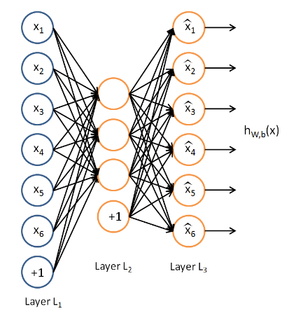

Auto Encoder
Table of Contents
1 Auto Encoder
1.1 auto-encoder
auto-encoder (自编码器) 是一种无监督的机器学习方法, 目的是拟合 identity 函数, 即 \(f(x)=x\).

上面显示了一个简单的 auto-encoder:
- 输入 feature 大小为 6,
- input layer 与 hidden layer 之间的权重可以看作是 encoder, 可以把 input 大小压缩为 3
- hidden layer 与 output layer 之间的权重看作是 decoder, 可以把压缩的数据还原为原始数据
数据可以压缩, 是因为数据通常具有相关性, 例如: 假设输入数据 x 为 \([[1,2,3,4,5],[2,4,6,8,10],[3,6,9,12,15]\ldots]\), 其中隐含着一个规律是 \(x_i^j=x_i^0*(j+1)\)
所以 x 实际可以压缩为 \([1,2,3...]^T\).
auto-encoder 可以学习到这个隐含的规律, 从而对原数据进行压缩. 压缩的结果体现在 hidden layer, 而规律则体现在 encoder 和 decoder 的权重.
实际上, auto-encoder 这个特征也可以看作是某种`特征提取`, 和 PCA 降维有类似的效果.但 PCA 属于线性降维, 而 auto-encoder 属于非线性降维 (与 t-SNE) 类似.
1.2 提取简单的特征
import numpy as np import matplotlib.pyplot as plt import torch from torch import nn from torch import optim from torch.utils.data import DataLoader, Dataset import torch.nn.functional as F # ---------- data ---------- class PlainDataset(Dataset): def __init__(self): x = torch.round(torch.rand(1000) * 200) x = x.unsqueeze(1) x = torch.cat((x, x * 2, x * 3, x * 4, x * 5, x * 6, x * 7, x * 8, x * 9, x * 10), 1) self.X = x self.Y = self.X def __getitem__(self, index): return self.X[index], self.Y[index] def __len__(self): return len(self.X) training_set = PlainDataset() training_loader = DataLoader(training_set, batch_size=100, shuffle=True) # ---------- helper ---------- def test(): m = model[0] x = torch.tensor([[2, 4, 6, 8, 10, 12, 14, 16, 18, 20]]).float() y_hat = model(x) print("orig: ", x, " new: ", y_hat, "a:", m(x)) x = torch.tensor([[1, 2, 3, 4, 5, 6, 7, 8, 9, 10]]).float() y_hat = model(x) print("orig: ", x, " new: ", y_hat, "a:", m(x)) x = torch.tensor([[10, 20, 30, 40, 50, 60, 70, 80, 90, 100]]).float() y_hat = model(x) print("orig: ", x, " new: ", y_hat, "a:", m(x)) def train(): for i in range(1500): for x, y in training_loader: loss = criterion(model(x), y) optimizer.zero_grad() loss.backward() optimizer.step() if i % 200 == 0: print("epoch #%d: loss: %f" % (i, loss.item())) # ---------- model ---------- model = nn.Sequential(nn.Linear(10, 1), nn.ReLU(), nn.Linear(1, 10)) criterion = nn.MSELoss() optimizer = optim.Adam(model.parameters(), weight_decay=0.001) train() test()
epoch #0: loss: 497518.718750 epoch #200: loss: 0.224333 epoch #400: loss: 0.175876 epoch #600: loss: 0.167690 epoch #800: loss: 0.147397 epoch #1000: loss: 0.062419 epoch #1200: loss: 0.034183 epoch #1400: loss: 0.084953 orig: tensor() new: tensor() a: tensor() orig: tensor() new: tensor() a: tensor() orig: tensor() new: tensor() a: tensor()
1.3 复杂一点的特征
class PlainDataset(Dataset): def __init__(self): x = torch.round(torch.rand(1000) * 200) z = torch.round(torch.rand(1000) * 200) x = x.unsqueeze(1) x = torch.cat((x, x * 2, x * 3, x * 4, x * 5, x * 6, x * 7, x * 8, x * 9, x * 10), 1) self.X = x + z.unsqueeze(1) self.Y = self.X def __getitem__(self, index): return self.X[index], self.Y[index] def __len__(self): return len(self.X)
x 的规律变为 \(x_i^j=x_i^0*(j+1)+k_i\), 其中 \(k_i\) 是一个随机数.
如果 hidden layer 大小为 1, 则无论怎么训练都无法收敛, 因为 x 不可能压缩为一个数, 直观上感觉至少需要两个数: \(x_i^0\) 和 \(k_i\). 实现测试时, 设置 hidden layer 大小为 3 时可以收敛
1.4 无法压缩的特征
class PlainDataset(Dataset): def __init__(self): self.X = torch.randn(1000, 10) self.Y = self.X def __getitem__(self, index): return self.X[index], self.Y[index] def __len__(self): return len(self.X)
若 x 为随机数, 则 hidden layer 的大小小于 feature 大小时都无法收敛, 因为不同的 feature 之间完全没有相关性, 无法压缩.
1.5 sparse auto-encoder1
autoencoder hidden layer 神经元的个数并不一定需要小于 feature 的大小, 例如手写数字识别的例子中, 针对 10*10 大小的图片, 我们期望 autoencoder 能提取出更多的特征 (超过 100 个), 以检测各种不同的边缘.
若直接使用 autoencoder, 由于 hidden layer 大小 >= feature 大小, 所以 autoencoder 有极大的自由度来选择权重: 无论 hidden layer 为多少, 通过调用权重总是可以收敛. 通过实验可以发现, 每次测试时都会收敛, 但每次收敛时的权重都不同.
import torch from torch import nn from torch import optim from torch.utils.data import DataLoader, Dataset # ---------- data ---------- class PlainDataset(Dataset): def __init__(self): x = torch.randn(1000, 10) self.X = x self.Y = self.X def __getitem__(self, index): return self.X[index], self.Y[index] def __len__(self): return len(self.X) training_set = PlainDataset() training_loader = DataLoader(training_set, batch_size=100, shuffle=True) # ---------- helper ---------- def test(): m = model[0] torch.manual_seed(1000) x = torch.randn(1, 10) y_hat = model(x) print("orig: ", x, " new: ", y_hat, "a:", m(x)) def train(): for i in range(300): for x, y in training_loader: loss = criterion(model(x), y) optimizer.zero_grad() loss.backward() optimizer.step() # if i % 20 == 0: # print("epoch #%d: loss: %f" % (i, loss.item())) # ---------- model ---------- for i in range(2): model = nn.Sequential(nn.Linear(10, 10), nn.ReLU(), nn.Linear(10, 10)) criterion = nn.MSELoss() optimizer = optim.Adam(model.parameters()) train() test()
orig: tensor() new: tensor() a: tensor() orig: tensor() new: tensor() a: tensor()
所以这种情况下 autoencoder 无法提取到有用的特征.
sparse autoencoder 的做法是在 autoencoder 的基础上, 给损失函数加上了一个sparsity penalty, 这个 penalty 会限制不能有太多的非零的权重.
具体实现的时候, 可以在训练时只保留最大的 K 个权重, 将剩余的权重清零 (类似于 dropout), 或者根据计算 hidden layer 中 activation 的值, 通过 KL divergence (KL divergence 与 cross entropy 类似, 都是用来度量两个概率分布的相似性) penalty 限制每个 activation 的针对所有样本的均值不能过大